From Gerber files to a finished PCB — at home, in a few clicks Від Gerber-файлів до готової плати — вдома, в кілька кліків
G-PCB guides you through milling a printed circuit board on a desktop CNC such as the 3018: open the Gerber zip, place the boards on the blank, set the work zero, probe the copper and run the programs one after another. It tells you which bit goes in next. G-PCB крок за кроком проводить через фрезерування друкованої плати на настільному ЧПК на кшталт 3018: відкрийте zip-архів Gerber, розмістіть плати на заготовці, встановіть нуль, зніміть карту висот міді й запустіть керуючі програми одну за одною. Програма підкаже, яку фрезу встановити наступною.
Windows 10/11 · GPL-3.0 · built on gSender, the free CNC sender by Sienci Labs Windows 10/11 · GPL-3.0 · побудовано на gSender — вільній програмі керування ЧПК від Sienci Labs
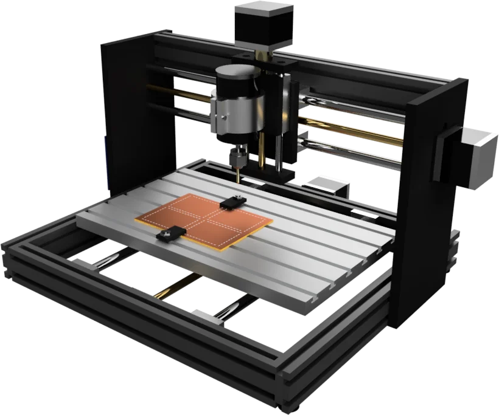
Eight steps from Gerber to boardВісім кроків від Gerber до плати
The steps run along the bottom of the screen; any finished step can be opened again. At the machine, the wizard shows the scene itself: the blank on the bed, the probe clips, the probing points — with the settings right where they belong. Кроки розташовані внизу екрана, до будь-якого виконаного кроку можна повернутися. Біля станка майстер показує саму сцену: заготовку на столі, затискачі щупа, точки вимірювання — а налаштування стоять саме там, де вони потрібні.
Open the Gerber filesВідкрийте Gerber-файли
Drop the zip from KiCad, EasyEDA, EAGLE or JLCPCB. G-PCB finds the copper, outline and drill layers and shows the board. A frame drawn around the board is recognised and ignored.Перетягніть zip-архів із KiCad, EasyEDA, EAGLE чи JLCPCB. G-PCB визначить шари міді, контуру й свердлування та покаже плату. Рамку навколо плати програма розпізнає й не враховує.
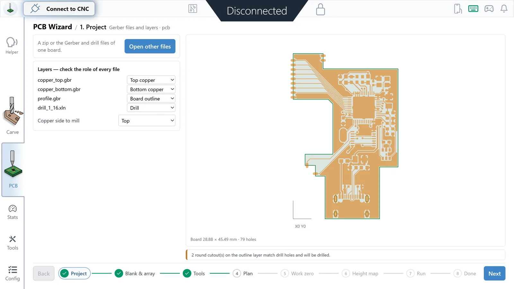
Place the boards on the blankРозмістіть плати на заготовці
Enter the blank size right on its dimension lines. The blank appears on the machine bed at true scale, with as many boards as fit, rotated when that fits more.Введіть розміри заготовки прямо на її розмірних лініях. Заготовка з'являється на столі станка у справжньому масштабі, з максимальною кількістю плат; якщо поворот уміщує більше, плати повертаються.
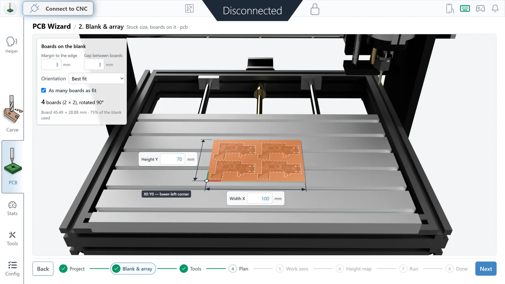
Pick the bitsОберіть інструмент
V-bits for isolation, drills by diameter, an end mill for large holes and the outline. Every program knows its bit and its cut width.V-подібні фрези для ізоляції, свердла за діаметрами, кінцева фреза для великих отворів і контуру. Кожна керуюча програма знає свій інструмент і ширину різу.
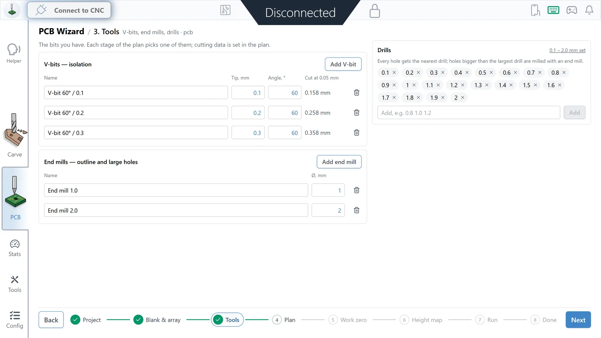
Check the planПеревірте план
Isolation, drilling, large holes and the outline with tabs become separate programs with time estimates. Warnings tell you where copper areas would stay connected with the chosen bit.Ізоляція, свердління, великі отвори й контур із перемичками стають окремими керуючими програмами з оцінкою часу. Попередження показують, де ділянки міді залишаться з'єднаними при обраному інструменті.
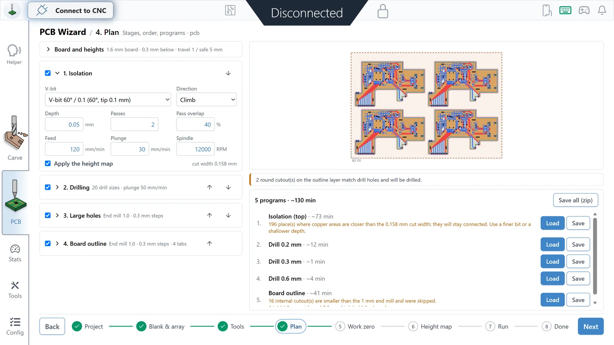
Set the work zeroВстановіть нуль
Jog the bit over the lower-left corner of the blank and set X0 Y0. Then clip the probe to the bit and to the copper: G-PCB probes Z0 at one point and zeroes every later bit at the same point.Підведіть фрезу до лівого нижнього кута заготовки й встановіть X0 Y0. Далі закріпіть затискачі щупа на фрезі й на міді: G-PCB вимірює Z0 в одній точці й встановлює нуль кожної наступної фрези в тій самій точці.
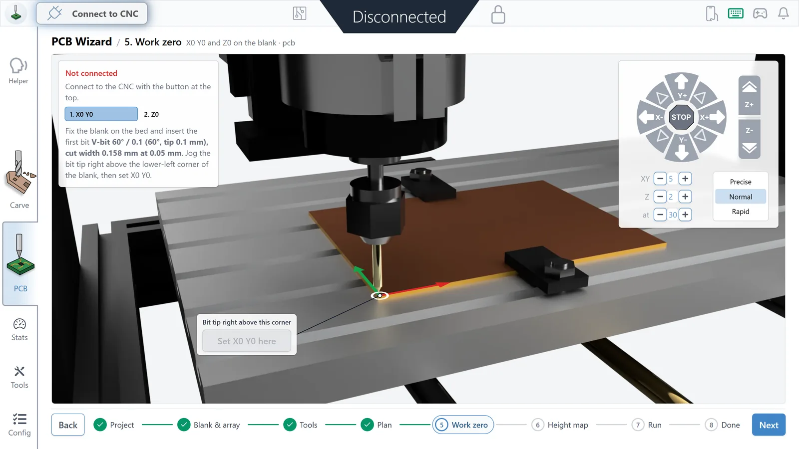
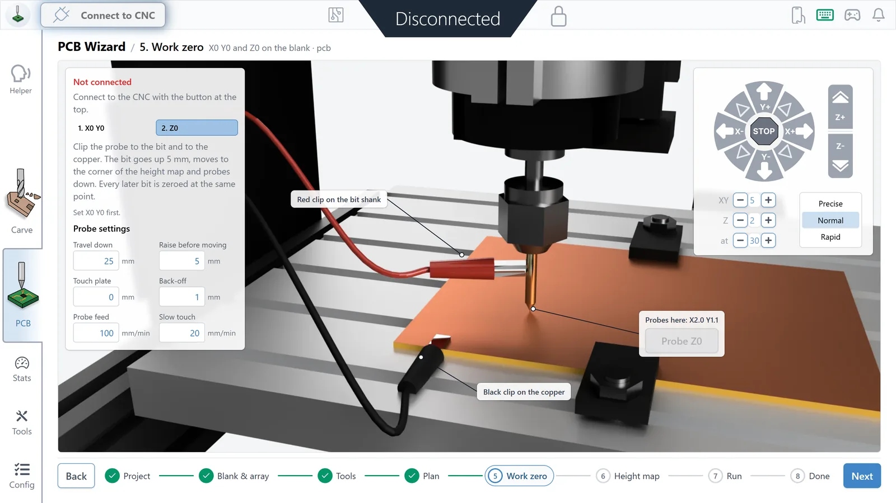
Probe the height mapЗніміть карту висот
Copper-clad blanks are never flat. The probe touches the copper on a grid over the isolation area, and the isolation program follows the surface — so a 0.05 mm cut stays 0.05 mm across the whole board.Фольгований склотекстоліт ніколи не буває рівним. Щуп торкається міді в точках сітки над зоною ізоляції, і програма ізоляції повторює рельєф поверхні — тож різ глибиною 0,05 мм лишається 0,05 мм по всій платі.
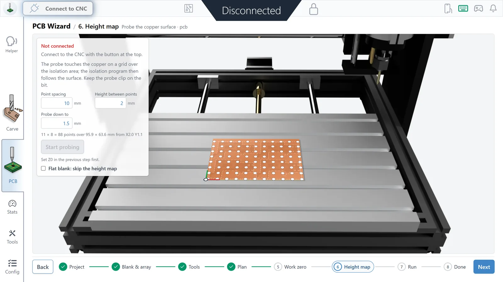
Run program by programВиконуйте програму за програмою
The current program's toolpaths are drawn on the blank. Insert the bit it asks for, probe its Z0, load, start. Only the exact program G-PCB generated can be started, and a finished program moves you on to the next.Траєкторії поточної програми показані на заготовці. Встановіть потрібну фрезу, виміряйте її Z0, завантажте й запустіть. Запустити можна лише ту програму, яку згенерував G-PCB, а після завершення майстер переходить до наступної.
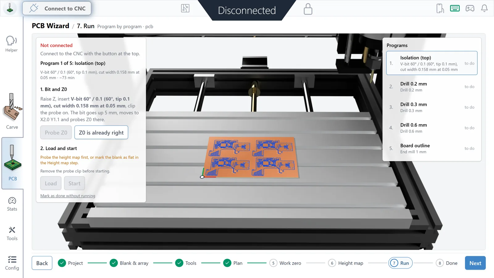
Made for milling PCBs at homeСтворено для фрезерування плат удома
Everything the job needs in one place, on the machine you already have.Усе потрібне для роботи в одному місці, на станку, який у вас уже є.
Board arraysГрупове розміщення плат
As many copies as fit on the blank, or a fixed number of columns and rows, with margin and gap you set.Стільки копій, скільки вміщує заготовка, або задана кількість стовпців і рядів із відступом і проміжком на ваш вибір.
Height mapКарта висот
The copper surface is probed and the isolation follows it, so thin traces survive on a warped blank.Поверхню міді вимірює щуп, а ізоляція повторює її рельєф, тож тонкі доріжки зберігаються навіть на вигнутій заготовці.
Z0 for every bitZ0 для кожної фрези
Each bit is zeroed with the probe clip at the same point of the blank; the wizard knows which bit Z0 was set for.Нуль кожної фрези вимірюється щупом в одній і тій самій точці заготовки; майстер пам'ятає, для якої фрези встановлено Z0.
Guided bit changesПідказки при зміні фрези
Isolation, drills, holes and outline run in order; you always see which bit to insert next.Ізоляція, свердління, отвори й контур виконуються по черзі; ви завжди бачите, яку фрезу встановити наступною.
Clear stopsЗрозумілі зупинки
An alarm or a silent controller stops probing with a plain explanation and the Unlock or Reset button right there.Аварійний стан або контролер, що перестав відповідати, зупиняють вимірювання з поясненням причини й кнопкою Unlock або Reset поруч.
A full CNC senderПовноцінне керування ЧПК
Built on gSender: jogging, console, macros, visualizer and job control are all there when you need them.Побудовано на gSender: ручне переміщення осей, консоль, макроси, візуалізація й керування завданням доступні, коли потрібні.
See it at the machineУсе видно біля станка
The scenes are rendered from a CNC 3018 model, so what you see on the screen is what you do with your hands.Сцени відрендерено з моделі ЧПК 3018, тож те, що ви бачите на екрані, ви й робите руками.
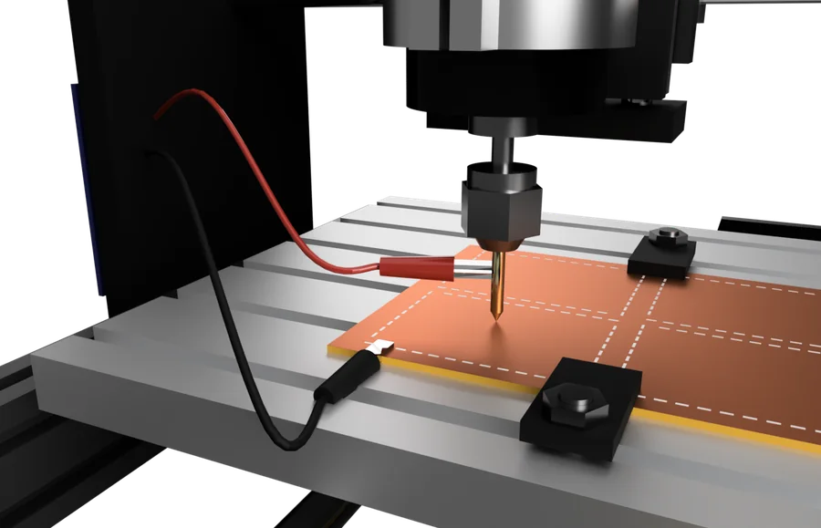
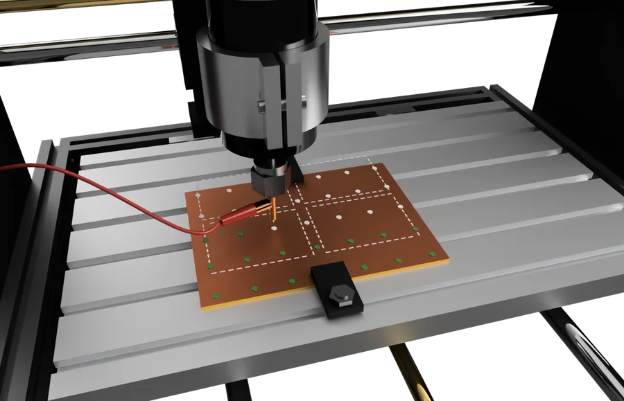
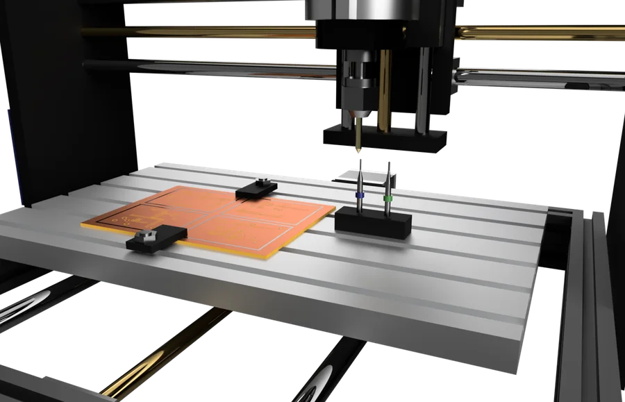
What you needЩо потрібно
Machine and bitsСтанок та інструмент
- A desktop CNC with GRBL or grblHAL firmware — 3018, 3018 Pro / Plus, 4040 and similarНастільний ЧПК із прошивкою GRBL або grblHAL — 3018, 3018 Pro / Plus, 4040 та подібні
- A 20–60° V-bit for isolation (tip 0.1–0.2 mm)V-подібна фреза 20–60° для ізоляції (вершина 0,1–0,2 мм)
- Carbide drills for your hole sizes and a 1 mm end mill for the outlineТвердосплавні свердла потрібних діаметрів і кінцева фреза 1 мм для контуру
- A probe: two alligator clips wired to the controller's probe pinsЩуп: два затискачі «крокодил», під'єднані до виводів щупа контролера
Board and computerПлата й комп'ютер
- Single-sided copper-clad blank (FR4 or FR1)Однобічний фольгований склотекстоліт або гетинакс
- Gerber files from any PCB editor, zipped or as separate filesGerber-файли з будь-якого редактора плат, у zip-архіві чи окремими файлами
- A Windows 10/11 PC connected to the machine over USB or EthernetКомп'ютер із Windows 10/11, під'єднаний до станка через USB або Ethernet
FAQ
Is G-PCB free?G-PCB безкоштовна?
Yes. It is open source under GPL-3.0, like gSender it is built on.Так. Це відкритий код за ліцензією GPL-3.0, як і gSender, на якому вона побудована.
Does it work with my machine?Чи підійде мій станок?
Any machine with GRBL 1.1 or grblHAL that gSender can control. The pictures show a 3018, the most common desktop CNC.Будь-який станок із GRBL 1.1 або grblHAL, яким може керувати gSender. На зображеннях показано 3018 — найпоширеніший настільний ЧПК.
Double-sided boards?Двобічні плати?
Single-sided boards today; double-sided boards are planned.Зараз однобічні плати; двобічні заплановано.
macOS or Linux?macOS чи Linux?
Windows builds are released now. The code builds on macOS and Linux as well; official builds will follow.Зараз виходять збірки для Windows. Код збирається й на macOS та Linux; офіційні збірки з'являться згодом.
How do updates work?Як оновлюватися?
G-PCB checks for a new version at start and in Stats → About. A window shows what changed, and the update never starts during a job.G-PCB перевіряє наявність нової версії під час запуску й у Stats → About. Вікно показує, що змінилося, а оновлення ніколи не запускається під час виконання завдання.
Found a problem?Знайшли помилку?
Write to us on WhatsApp or open an issue on GitHub.Напишіть нам у WhatsApp або створіть issue на GitHub.
Need help?Потрібна допомога?
Something does not work, or you are not sure which setting to choose — write to us on WhatsApp. Tell us your G-PCB version, your machine and what happens; a screenshot helps a lot.Щось не працює або не знаєте, яке налаштування обрати, — напишіть нам у WhatsApp. Вкажіть версію G-PCB, свій станок і що відбувається; дуже допомагає скриншот.
Support G-PCBПідтримати G-PCB
G-PCB is free and will stay free. If it saved you a trip to a board house, a donation helps keep it going: new features, double-sided boards, builds for macOS and Linux.G-PCB безкоштовна й такою залишиться. Якщо вона заощадила вам замовлення плат на виробництві, донат допоможе розвивати її далі: нові можливості, двобічні плати, збірки для macOS і Linux.
Mill your next board at homeВиготовте наступну плату вдома
Free download for Windows. The installer is not code-signed yet: if SmartScreen warns, choose More info → Run anyway.Безкоштовне завантаження для Windows. Інсталятор поки не має цифрового підпису: якщо SmartScreen попереджає, оберіть «Докладніше» → «Виконати в будь-якому разі».